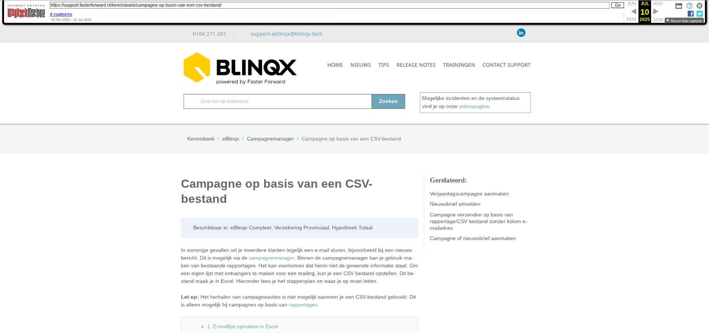

Campagne op basis van een CSV-bestand

Tekstinhoud
Campagne op basis van een CSV-bestand
Beschikbaar in: eBlinqx Compleet, Verzekering Provinciaal, Hypotheek Totaal
In sommige gevallen wil je meerdere klanten tegelijk een e-mail sturen, bijvoorbeeld bij een nieuwsbericht. Dit is mogelijk via de campagnemanager. Binnen de campagnemanager kan je gebruik maken van bestaande rapportages. Het kan voorkomen dat hierin niet de gewenste informatie staat. Om een eigen lijst met ontvangers te maken voor een mailing, kun je een CSV bestand opstellen. Dit bestand maak je in Excel. Hieronder lees je het stappenplan en waar je op moet letten.
Let op: Het herhalen van campagneacties is niet mogelijk wanneer je een CSV-bestand gebruikt. Dit is alleen mogelijk bij campagnes op basis van rapportages.
1. E-maillijst opmaken in Excel
2. Opslaan
3. Controleer type CSV en pas deze eventueel aan
Controleren
Aanpassen
4. Lijstscheidingsteken controleren
5. Bestand toevoegen in campagne
Foutmeldingen
1. E-maillijst opmaken in Excel
Zorg dat de eerste kolom van het CSV bestand de kolom crmdossier_id is. Deze dossierid's moeten overeenkomen met de laatste cijfers (die niet '0' zijn) van het bijbehorende dossier in eBlinqx.
2. Opslaan
Sla het bestand op als CSV (gescheiden door lijstscheidingsteken).
Let op: sla het bestand niet op als 'CSV-UTF8', 'CSV (Macintosh)' of 'CSV (MS-DOS)'.
3. Controleer type CSV en pas deze eventueel aan
Controleren
Om te controleren of het CSV bestand een juist UTF-8 bestand is, doorloop je de volgende stappen:
Download het CSV bestand, deze staat nu links onder op de pagina
Klik met rechtermuis knop op bestand
Kies voor Weergeven in map
De map opent
Klik hier nu met rechtermuis knop op bestand
Kies voor openen met kladblok
Controleer onderin de balk het bestandstype
Aanpassen
Indien het bestand geen type UTF-8 is, kan je het bestandstype aanpassen. Dit doe je als volgt:
In het kladblok kies je voor Bestand – Opslaan als
Onderaan zie je 'Codering' staan
Hier kies je voor UTF-8
Vervolgens klik je op 'Opslaan'
Dit tekstbestand exporteer je vervolgens weer naar Excel, zodat je er een .csv bestand van kunt maken. Dit doe je als volgt:
Je gaat naar Excel
Hier kies je voor Bestand – Openen – Bladeren
Je zorgt ervoor het type bestand op 'Alle bestanden' staat (niet op Alle Excel-bestanden)
Vervolgens selecteer je het tekstbestand wat je hebt omgezet naar UTF-8 en klikt op 'Openen'*
Het tekstbestand wordt geopend in Excel
Je slaat vervolgens het Excelbestand op met het type CSV (gescheiden door lijstscheidingstekens (zie stap 2)
* Het kan zijn dat er nog extra vervolgstappen nodig zijn om het bestand in Excel te kunnen openen. Dit zijn de stappen om de 'Wizard tekst' te importeren:
1. Je kiest het bestandstype 'Gescheiden', vervolgens klik je op 'Volgende'
2. Je vinkt 'Puntkomma' aan en klikt op 'Volgende'
3. Bij Gegevenstype per kolom laat je deze op 'Standaard' staan en kiest voor 'Voltooien'
4. Lijstscheidingsteken controleren
In Windows kun je het standaard lijstscheidingsteken instellen. Controleer hier of deze op ";" staat. Als deze op een ander teken staat, zal de CSV een foutmelding geven in de campagnemanager in eBlinqx.
5. Bestand toevoegen in campagne
Het aangemaakte CSV bestand voeg je toe aan jouw campagne. Bij 'Bron' kies je voor 'CSV herhalingsactie niet mogelijk)'. Let op: je kan de campagne pas uitvoeren wanneer het CSV bestand volledig is ingelezen. Tot die tijd is het niet mogelijk om op de knop 'Uitvoeren' te drukken.
Foutmeldingen
Als je het CSV-bestand foutief aanlevert in de campagnemanager, kun je één van de volgende foutmeldingen krijgen:
Je zult dan in het CSV bestand de eerste kolom aan moeten passen naar crmdossier_id om vervolgens het aangepaste CSV bestand opnieuw toe te voegen in de campagnemanager. Indien de eerste kolom toch crmdossier_id is dan kan het zijn dat het bestand niet in het juiste type staat. Dit moet UTF-8 zijn.
De crmdossier_id's hebben geen voorloopnullen. Deze voorloopnullen zullen verwijderd moeten worden in het CSV bestand. Het aangepast CSV bestand dient opnieuw in de campagne gezet te worden.
Laatste update: 10 juni 2024
Was deze informatie nuttig?
Ja Nee